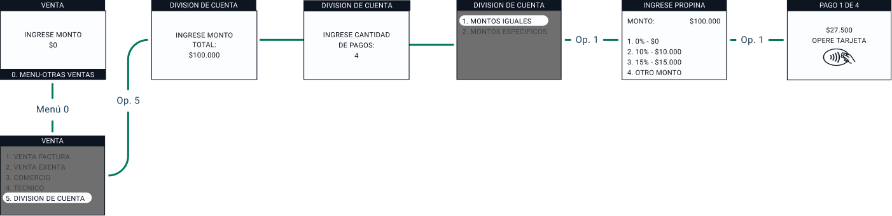
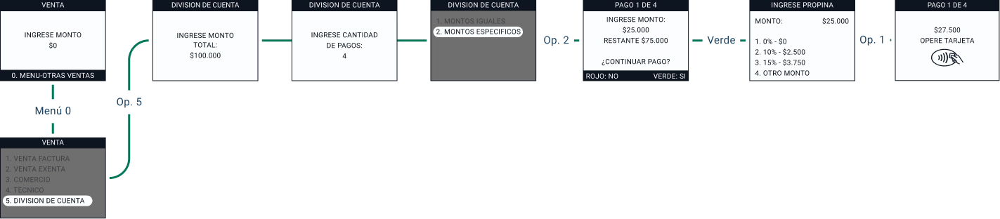
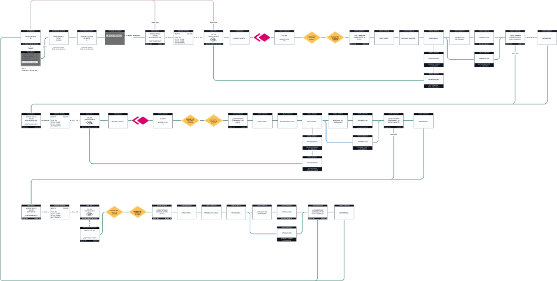

Negociación de montos
Proyectamos que el tiempo destinado al acuerdo de pagos entre comensales sería excesivamente alto, convirtiéndose en un cuello de botella para el flujo del restaurante.
Transformación del flujo de cuentas compartidas en terminales POS para eliminar errores de cálculo y agilizar la rotación de mesas.
Tiempo en mesa
Reducción drástica del tiempo operativo del personal gestionando pagos.
Satisfacción
Incremento desde un NPS 4 tras la implementación de la nueva funcionalidad.
Rotación
Optimización del cierre de cuentas en horas críticas de alta transaccionalidad.
El flujo histórico de los terminales POS no permitía procesar pagos divididos de forma nativa. Detectamos que el mayor "pico de dolor" era la carga cognitiva del garzón ante cálculos manuales bajo presión.
“Hay muchos errores al procesar pagos divididos, y a veces se pierden propinas o falta plata”
Miguel, 35 años, Cajero, Las Condes
Proyectamos que el tiempo destinado al acuerdo de pagos entre comensales sería excesivamente alto, convirtiéndose en un cuello de botella para el flujo del restaurante.
Suponíamos que la revisión manual de montos podría generar desconfianza y roces innecesarios entre el personal y los clientes.
Planteamos la existencia de una brecha crítica al intentar conciliar el monto ingresado en el POS con la voluntad real de pago del cliente.
Cero cálculos mentales. El sistema gestiona saldos dinámicos en tiempo real.
Interfaz optimizada para la lectura rápida del proceso e información constante.
Se identificaron las características técnicas y limitaciones del dispositivo POS para determinar las alternativas viables en la división de cuentas y cobros simultáneos. .
¿Cómo podemos transformar una tarea administrativa lenta en una experiencia fluida que empodere al personal de servicio?
Selección de mesa y visualización de deuda total.
Definición de rutas: Montos iguales o específicos.
Gestión dinámica de saldos y pagos parciales.
Emisión de comprobantes y liberación de mesa.
Tras consolidar los pilares estratégicos, transformamos los hallazgos en una solución tangible mediante un proceso de diseño iterativo. El foco fue mitigar errores críticos de cálculo mediante una arquitectura de interfaz optimizada para entornos de alta demanda.
Desarrollamos estructuras de flujo enfocadas en integrar la funcionalidad de pagos divididos directamente en el ecosistema POS. Priorizamos la flexibilidad operativa bajo una arquitectura estricta, alineada con las limitantes del hardware y el procesamiento de datos en tiempo real.

Diseñado para grupos que buscan una liquidación rápida sin cálculos manuales. El sistema automatiza la división exacta del saldo total según la cantidad de comensales.

Optimizado para consumos individuales. Permite la entrada manual de montos variables, recalculando el saldo pendiente de la mesa automáticamente.

Tras la validación de los prototipos de alta fidelidad, se realizó un Handoff técnico detallado para asegurar que la implementación en los terminales Verifone mantuviera la integridad de la experiencia diseñada.

Reducción del 100% en descuadres de caja reportados por cálculos manuales fallidos.
Disminución crítica de la fricción entre cliente y garzón durante el "pico de pago".
Flujo validado y operando con éxito en una red de 100 comercios piloto.
Arquitectura de información escalable para despliegue masivo a nivel nacional.
Este proyecto no solo fue una actualización de software; fue una modernización sistémica del sector gastronómico en Chile. Logramos demostrar que el diseño centrado en el usuario es la herramienta más poderosa para transformar industrias tradicionales.